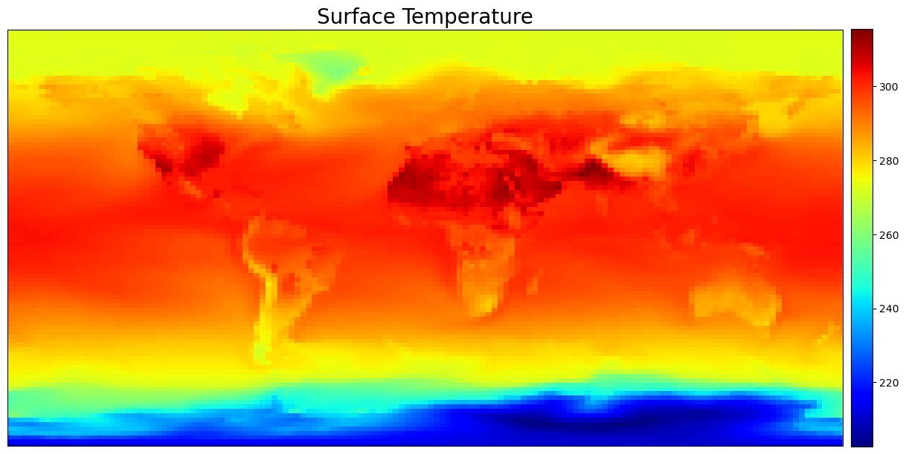
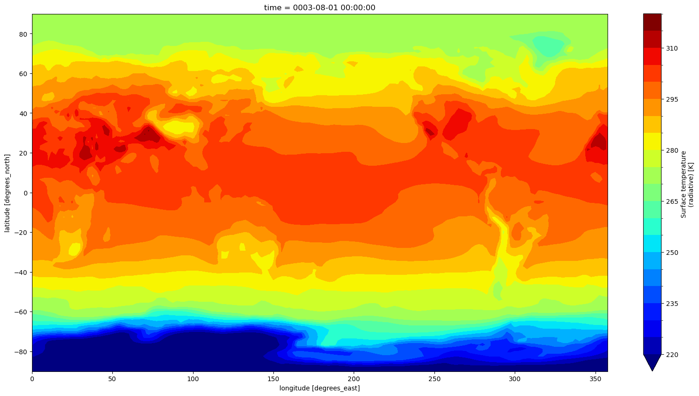
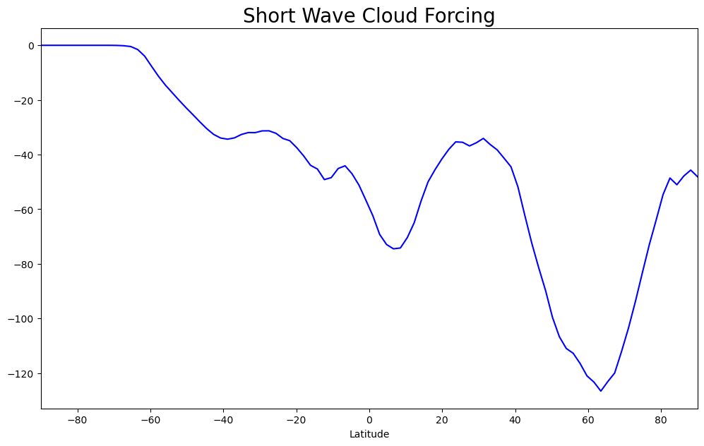
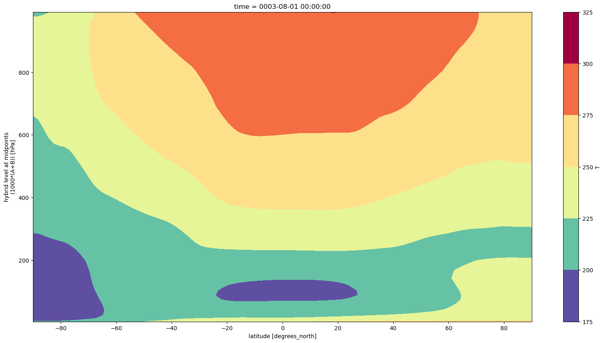
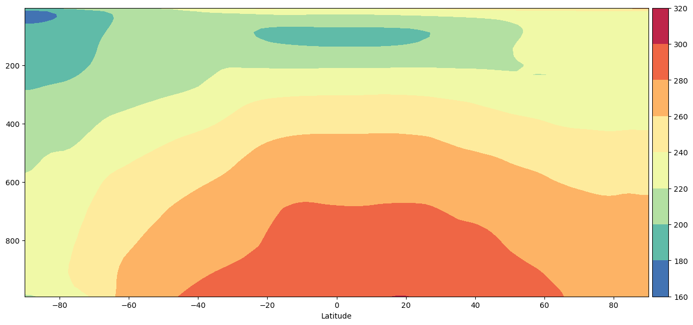
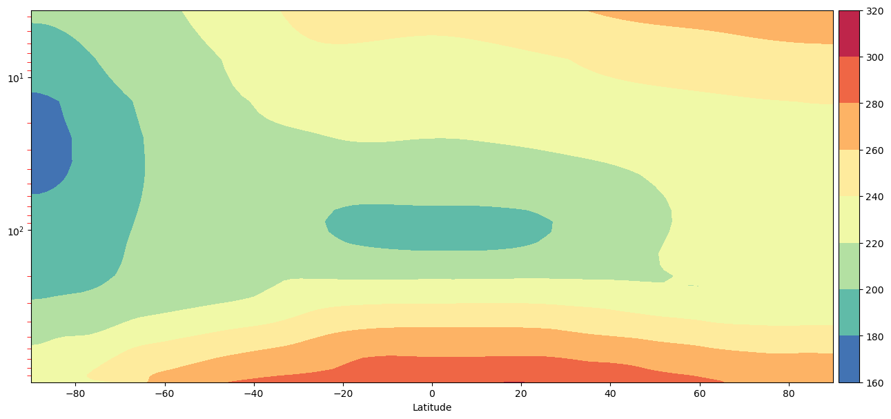

Basic Plotting#
BEFORE BEGINNING THIS EXERCISE - Check that your kernel (upper right corner, above) is NPL 2023b. This should be the default kernel, but if it is not, click on that button and select NPL 2023b.
This activity was developed primarily by Cecile Hannay and Jesse Nusbaumer.
For the atmospheric data, we will look at common variables in the atmospheric diagnostics. This notebook covers 3 basic plotting examples:
Exercise 1: Global lat/lon of surface temperature
Exercise 2: Zonal mean of short wave cloud forcing
Exercise 3: Temperature zonal mean with vertical levels
Some of the plotting in these examples are based on the AMWG diagnostic framework (ADF) and some are natively from the xarray functionality. xarray will be used for the data I/O, analysis, and some plotting, matplotlib and cartopy will aid in plotting, and numpy for calculations
import os
import cartopy.crs as ccrs
import cartopy.feature as cfeature
import cftime
import matplotlib as mpl
import matplotlib.path as mpath
import matplotlib.pyplot as plt
import numpy as np
import xarray as xr
from matplotlib.gridspec import GridSpec
from matplotlib.lines import Line2D
from mpl_toolkits.axes_grid1 import make_axes_locatable
The first step is to grab an atmosphere (CAM) history file from your CESM model run
# Set your username here:
username = "PUT_USER_NAME_HERE"
# Here we point to the archive directory from your b.day2.1 simulation
monthly_output_path = f"/glade/scratch/{username}/archive/b.day2.1/atm/hist"
# If you were unable to successfully run the b.day2.1 simulation, then feel free to use
# this provided simulation data instead:
#monthly_output_path = "/glade/p/cesm/tutorial/tutorial_2023_archive/b.day2.1/atm/hist"
# Name of history file to plot
file_name = "b.day2.1.cam.h0.0003-07.nc"
files = os.path.join(monthly_output_path, file_name)
files
ds = xr.open_dataset(files)
ds
Exercise 1: Make a lat-lon plot of TS#
To highlight plotting the variables from the CESM atmosphere (CAM) file, the first example will plot a simple global lat/lon plot of surface temperature TS
Grab data from first time stamp#
NOTE: This dataset has only one time
ts_0 = ds.TS.sel({"time": ds.TS.time.values[0]}).squeeze()
ts_0
Next is to set up the map. Since we are plotting a global lat/lon, we will use the Plate Carree projection.
# define the colormap
# cmap = plt.cm.get_cmap('jet')
cmap = mpl.colormaps["jet"]
# set up the figure with a Plate Carree projection
fig = plt.figure(figsize=(15, 10))
ax = fig.add_subplot(1, 1, 1, projection=ccrs.PlateCarree())
# Plot the first timeslice of TS
img = ax.pcolormesh(ds.lon, ds.lat, ts_0, cmap=cmap, transform=ccrs.PlateCarree())
plt.title("Surface Temperature", fontsize=20)
# Set up colorbar
plt.colorbar(img, orientation="vertical", fraction=0.0242, pad=0.01)
plt.show()
Click here for the solution

Figure: Plotting solution.
Question:
The colorbar limits are set automatically by pcolormesh. How could you change the arguments for the pcolormesh function to set the plotting limits?
Click here for hints
Choose a maximum temperature of 300K and minimum temperature of 225K.
img = ax.pcolormesh(ds.lon, ds.lat, ts_0, vmax=300, vmin=225, cmap=cmap, transform=ccrs.PlateCarree())
Question:
How could we change the central longitude?
Click here for hints
The default central longitude is 0. Try setting it to 180. Then try other values from 0-360.ax = fig.add_subplot(1,1,1, projection=ccrs.PlateCarree(central_longitude=180))
A second quick example is for xarrays built-in plotting which uses the matplotlib and cartopy in the background. xarray makes a basic plot fairly simple.
# Xarray native plotting
# Set up figure and axis
fig, ax = plt.subplots(1, figsize=(20, 10))
# Plot the data straight from the xarray dataset
ts_0.plot.contourf(cmap="jet", levels=np.arange(220, 321, 5))
plt.show()
Click here for the solution

Figure: Plotting solution.
Exercise 2: Zonal plot of SWCF#
The second example will plot the short wave cloud forcing SWCF zonally.
Grab the variable data and mean over the the lon value
ds_swcf = ds.SWCF
# Get all the dataset dimensions
d = ds_swcf.dims
# Grab all dimensions to mean the lon values from
davgovr = [dim for dim in d if dim not in ("lev", "lat")]
# Make new dataset of zonal mean values
ds_swcf_zonal = ds_swcf.mean(dim=davgovr)
# print some values of new zonally-averaged SWCF variable
ds_swcf_zonal
# Create figure and axis
fig, ax = plt.subplots(1, figsize=(12, 7))
# Set Main title for subplots:
plt.title("Short Wave Cloud Forcing", fontsize=20)
# Plot value on y-axis and latitude on the x-axis
ax.plot(ds_swcf_zonal.lat, ds_swcf_zonal, c="goldenrod")
ax.set_xlim(
[max([ds_swcf_zonal.lat.min(), -90.0]), min([ds_swcf_zonal.lat.max(), 90.0])]
)
ax.set_xlabel("Latitude")
plt.show()
Click here for the solution

Figure: Plotting solution.
Question
What code could you add to set a legend for plot line?
Click here for hints
enter the following lines after the ax.set_xlabel command and before the plt.show() command.
label = ds_swcf.time.values[0].strftime() # -> '0001-02-01 00:00:00'
line = Line2D([0], [0], label=label,
color="blue")
fig.legend(handles=[line],bbox_to_anchor=(-0.15, 0.15, 1.05, .102),loc="right",
borderaxespad=0.0,fontsize=16,frameon=False)
Question
What else could you label the line legend, if anything?
Click here for hints
Try setting the label value to something else like your simulation run name, the season or month, etc.
label = 'Season '
Question
How can you change the color on the plot and the legend?
Click here for hints
To change colors, try a different named color (e.g. red or goldenrod). You should make sure both the plot and the legend match or your plot wont make sense.
Click here for a solution
Figure: Plotting solution.
Exercise 3: Plot of zonal T#
This example will plot the 3D zonal mean of temperature T with the pressure as the y-variable and latitude as the x-variable. We are showing you four different ways to make the same plot since each is valuable for plots with pressure on the y-axis and how to format those to get more information from the data.
# Remove all dimensions of length one
ds_t = ds.T.squeeze()
ds_t
Plot 1: Natively via xarray#
This plot uses the xarray native grids for the plot
y-axis is increasing with height
y-axis is not in log pressure
# Average over all dimensions except `lev` and `lat`.
d = ds_t.dims
davgovr = [dim for dim in d if dim not in ("lev", "lat")]
DS = ds_t.mean(dim=davgovr)
DS.transpose("lat", "lev", ...)
fig, ax = plt.subplots(1, figsize=(20, 10))
DS.plot.contourf(ax=ax, y="lev", cmap="Spectral_r")
plt.show()
Click here for a solution

Figure: Plotting solution.
Plot 2: Quick ADF style#
This plot uses the quick style of the AMWG Diagnostic Framework (ADF) packages.
y-axis is increasing with height
y-axis is not in log pressure
# Average over all dimensions except `lev` and `lat`.
d = ds_t.dims
davgovr = [dim for dim in d if dim not in ("lev", "lat")]
DS = ds_t.mean(dim=davgovr)
lev = DS["lev"]
lat = DS["lat"]
mlev, mlat = np.meshgrid(lev, lat)
# Generate zonal plot:
fig, ax = plt.subplots(1, figsize=(15, 7))
# Create zonal plot with vertical levels
img = ax.contourf(mlat, mlev, DS.transpose("lat", "lev"), cmap="Spectral_r")
# Format axis and ticks
ax.set_xlabel("Latitude")
fig.colorbar(img, ax=ax, location="right")
Click here for a solution
Figure: Plotting solution.
Questions
What differences do you see between the ADF quick plot and the xarray native plot?
Why might you want to use one or the other?
Where, vertically, do high pressures occur and what does this mean for where the ground would be located on this plot?
Click here for hints
The variable aice is actually ice fraction. To convert it to concentration you would need to multipy it by 100. In the rest of these notebooks we use the ice fraction fairly interchangeably with ice concentration. But if you are plotting these you should check your range and see if the maximum value is 1 or 100 because thats important for setting colorbar limits.
Plot 3: ADF style with reversed y-axis#
y-axis is decreasing with height
y-axis is not in log pressure
# Average over all dimensions except `lev` and `lat`.
d = ds_t.dims
davgovr = [dim for dim in d if dim not in ("lev", "lat")]
DS = ds_t.mean(dim=davgovr)
# print(DS.lev.min(),DS.lev.max())
lev = DS["lev"]
lat = DS["lat"]
mlev, mlat = np.meshgrid(lev, lat)
# Generate zonal plot:
fig, ax = plt.subplots(1, figsize=(15, 7))
# Create zonal plot with vertical levels
img = ax.contourf(mlat, mlev, DS.transpose("lat", "lev"), cmap="Spectral_r")
# Format axis and ticks
plt.gca().invert_yaxis()
ax.tick_params(which="minor", length=4, color="r")
# Set up colorbar
cbar_ax = fig.add_axes([0, 0, 0.1, 0.1])
posn = ax.get_position()
# Set position and size of colorbar position: [left, bottom, width, height]
cbar_ax.set_position([posn.x0 + posn.width + 0.005, posn.y0, 0.02, posn.height])
ax.set_xlabel("Latitude")
fig.colorbar(img, cax=cbar_ax, orientation="vertical")
Click here for a solution

Figure: Plotting solution.
Question:
What differences do you see on the y-axis between the result from Plot 2 and Plot 3?
Click here for hints
The plots are mirror images of each other because the y-axis has been flipped. Plot 2 has the highest pressures at the top of the y-axis while Plot 3 has the highest pressures at the bottom of the y-axis.
Question:
Where, vertically, do high pressures occur and what does this mean for where the ground would be located on these two figures ?
Click here for hints
The highest pressures in the atmosphere occur at the ground where the most atmospheric mass is pressing downward. This means that Plot 2 is oriented so the location where the ground is is the top of the plot, or up. In Plot 3 the orientation is so that the ground would be at the bottom of the plot, or down. Thus Plot 3 is often more intuitive to read because its oriented with the way we perceive the atmosphere.
Plot 4: Complex ADF style#
y-axis is decreasing with height
y-axis is in log pressure
# Average over all dimensions except `lev` and `lat`.
d = ds_t.dims
davgovr = [dim for dim in d if dim not in ("lev", "lat")]
DS = ds_t.mean(dim=davgovr)
# print(DS.lev.min(),DS.lev.max())
lev = DS["lev"]
lat = DS["lat"]
mlev, mlat = np.meshgrid(lev, lat)
# Generate zonal plot:
fig, ax = plt.subplots(1, figsize=(15, 7))
# Create zonal plot with vertical levels
img = ax.contourf(mlat, mlev, DS.transpose("lat", "lev"), cmap="Spectral_r")
# Format axis and ticks
plt.yscale("log")
plt.gca().invert_yaxis()
ax.tick_params(which="minor", length=4, color="r")
# Set up colorbar
cbar_ax = fig.add_axes([0, 0, 0.1, 0.1])
posn = ax.get_position()
# Set position and size of colorbar position: [left, bottom, width, height]
cbar_ax.set_position([posn.x0 + posn.width + 0.005, posn.y0, 0.02, posn.height])
ax.set_xlabel("Latitude")
fig.colorbar(img, cax=cbar_ax, orientation="vertical")
Click here for a solution

Figure: Plotting solution.
Question:
What differences do you see on the y-axis between the result from Plot 3 and Plot 4?
Click here for hints
The plots both have the y-axis oriented so that the highest pressures, or ground, is at the bottom of the plot. But the scale of the y-axis has changed so that in Plot 3 it is logarithmic.
Question:
What does that mean in terms of which part of the atmosphere are emphasized?
Click here for hints
With the logarithmic y-axis more of the upper atmosphere is shown on the figure. If you wanted to emphasize the boundary layer you might want to change the limits of the figure.